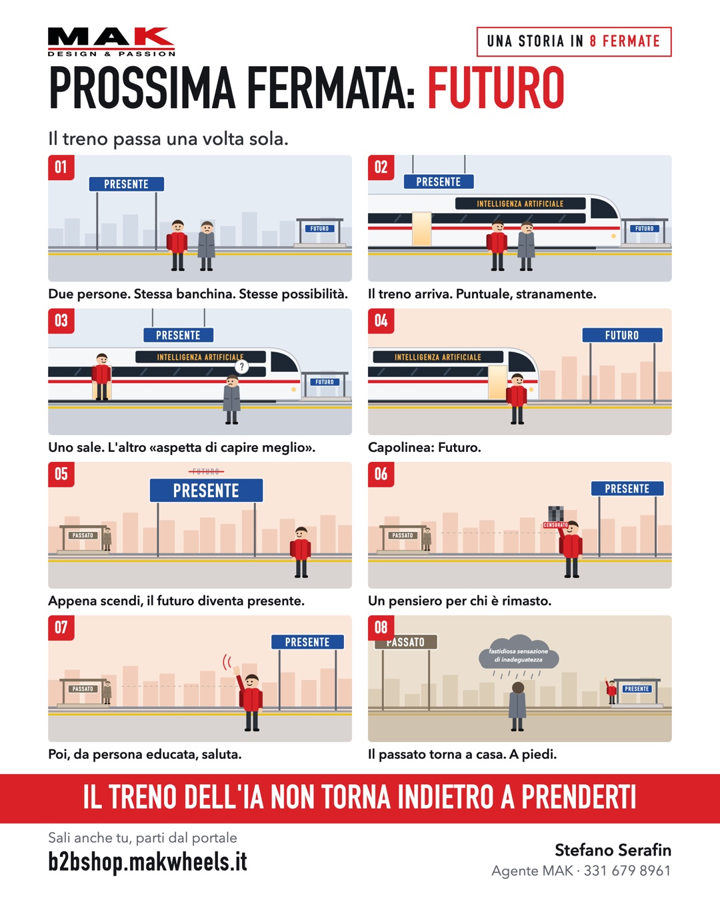

MAK · TRENI IN PARTENZA
Prossima fermata: Futuro
Il treno passa una volta sola.
Tocca per partire ▶
FINE CORSA
Il treno dell'IA non torna indietro a prenderti
Tu da che parte della banchina stai?
Tocca a destra per andare avanti, a sinistra per tornare indietro.
Sali anche tu, ti spiego come
Web app, automazioni, locandine animate come questa: le faccio da solo con l'intelligenza artificiale. Ci vuole meno di quanto pensi.
La locandina
Tienila premuta per salvarla o girarla a un collega.
